MiCompi permite que quienes lo necesiten puedan solicitar ayuda, y a quien quiera ayudar puede apuntarse como voluntario. Eventos grupales, peticiones de usuarios... ¿Quieres saber más?
¿Qué es MiCompi?
En nuestra sociedad, especialmente debido a la pandemia global que estamos viviendo en estas fechas, hay muchas personas necesitadas de ayuda de terceros o que se sienten solos y buscan con quien poder pasar el tiempo.MiCompi es un servicio de atención a personas en respuesta a este problema, quienes pueden solicitar ayuda a los voluntarios que se decidan registrar en el servicio. También permite apuntarse a eventos que hace la comunidad y poder valorar a los voluntarios.Para poder hacer uso de sus funciones, se puede hacer uso de la aplicación para teléfonos inteligentes, o bien llamando. Esto último es importante ya que hay personas, sobre todo mayores, que no tienen o no saben usar los nuevos teléfonos; pero a quienes les vendría bien poder usar nuestros servicios.
Sobre la app
La app ayuda a manejar todas las funcionalidades del servicio desde la palma de tu mano. Los voluntarios pueden ayudar en las peticiones de quienes necesiten ayuda apuntándose a éstos, y ayudar a organizar eventos para la comunidad de la plataforma. Además, pueden llegar a recibir premios por su desinteresada ayuda y por hacer crecer el servicio.En cuanto a los solicitantes, pueden pedir ayuda a los voluntarios del servicio y decidir quién de ellos viene a ayudarte, y tras ello chatear con este para quedar. En cuanto termine de ayudar, el solicitante puede dar feedback de este para recomendarlo o no en función de como haya prestado la ayuda. Además pueden ayudar a montar actividades de grupo con los voluntarios y pasarlo bien y en compañía.La administración también puede hacer uso de sus funciones desde la misma app, para poder controlarlo todo en cualquier momento y con la misma experiencia que los demás usuarios de la aplicación y del servicio en general.
Capturas
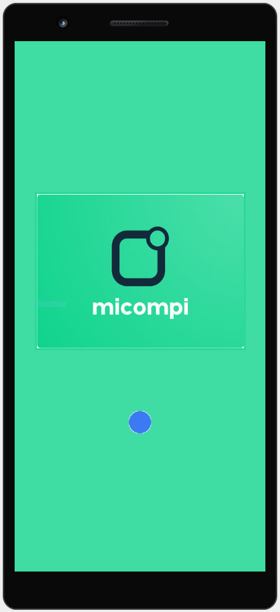
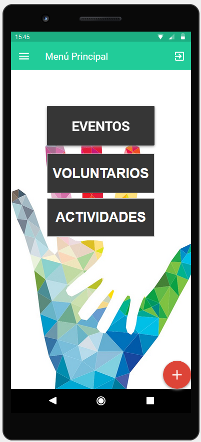
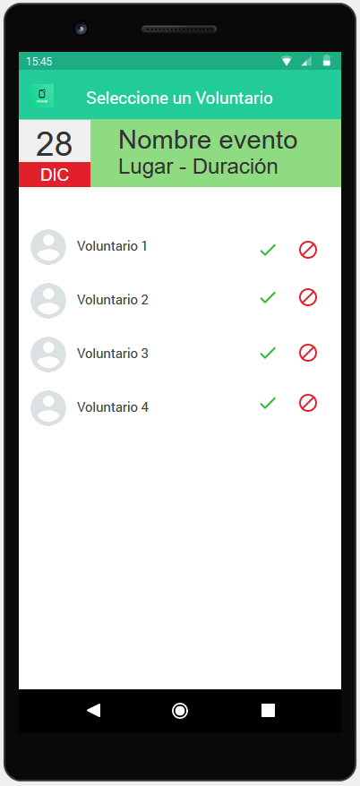
El desarrollo del concepto
Todo empezó tras formar los grupos, donde teníamos que organizarnos para poder desarrollar un concepto y tratar de volcarlo en un boceto de una aplicación usando Metodologías Ágiles
El equipo de desarrollo
Coordinadora: Noelia Escalera
Catalogador: Jesús Torres
Moderador / Product Owner: Iván Valero
Gestor de la Calidad: José Santos
Presentador: Javier Casado de Amezúa
¿Cómo salió la idea?
Debido a lo sucedido en estos tiempos, se veían por la televisión o Internet maneras de ayudar a los más mayores, o simplemente a quienes no podían ni salir por estar contagados.Han habido varias iniciativas por lo que queríamos plasmarlo en un proyecto de aplicación. Con ello, hicimos este mapa mental con lo que se hizo en un brainstorming previo:
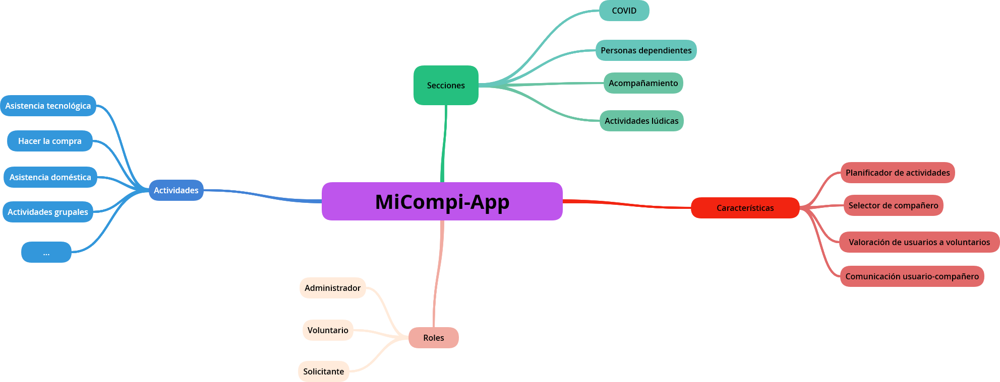
MiCompi y las Metodologías Ágiles
En este proyecto se ha optado por usar Metodologías Ágiles para desarrollar un boceto definido de la aplicación utilizando programas como JustInMind.A la hora de hacer el desarrollo en general el flujo de trabajo ha sido fluido una vez se haya tenido definido la visión, las Historias de Usuario y el Product Backlog de este.Sin embargo, durante el proceso se han ido viendo ciertas cuestiones que han afectado ligeramente a este desarrollo y que iremos describiendo en los siguientes puntos.
Estudiando el entorno: Personas y escenarios
Lo primero que hemos pensado es: ¿Qué necesitan los usuarios? ¿Qué puede pasar en la app? ¿Cómo debería responder el sistema ante todo lo que suceda?Para ello se ha optado por hacer una serie de personas y escenarios donde se podría evaluar las funcionalidades.Como muestra, dejaremos una persona y su escenario asignado.
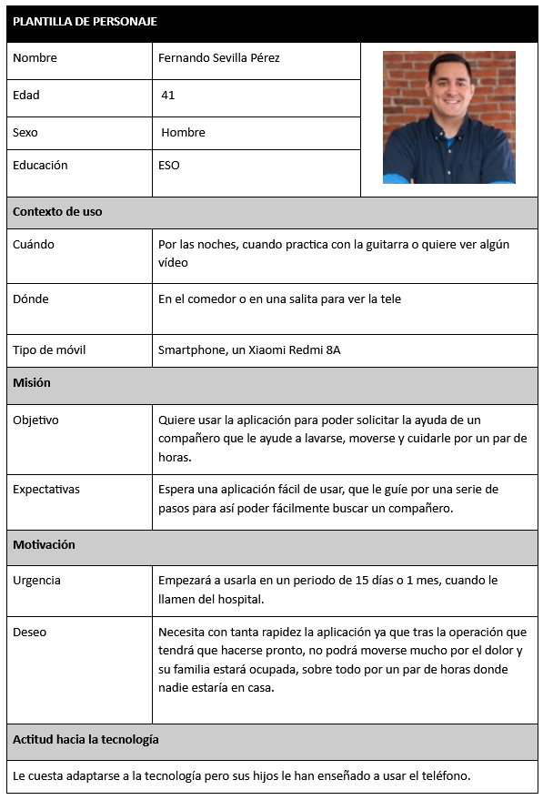
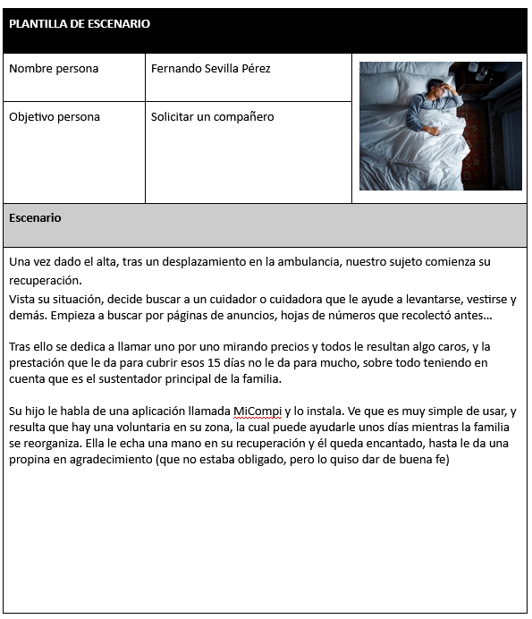
La visión del proyecto
El proyecto se basa principalmente en la creación de un servicio de ayuda a personas con distintas necesidades, realidades y capacidades con el objetivo de proporcionar soporte ante múltiples tipos de actividades y en diferentes secciones de trabajo. La aplicación trataría de solucionar el problema de la soledad y dependencia de personas, ayudándoles a conectar con otras personas que las puedan ayudar. Dicha aplicación se desarrolla sobre un nuevo mercado en ciernes y enfocada a las personas. No se crea la aplicación sobre una empresa con sus procesos de negocios ya existentes. La aplicación se crea de forma unitaria y es esta la que genera un nuevo modelo de negocio, este modelo de negocio son las distintas actividades orientadas a solventar el problema planteado. Estas son actividades (planificarlas, apuntarte), voluntarios (solicitarlos, apuntarse como uno de ellos), valoración de voluntarios y sistema de comunicación entre usuarios. Existen distintas aplicaciones que podrían resultar similares a MiCompi en el mercado. Quizás la más parecida es Te Ayudo, una app disponible para iOS y Android, cuya premisa es que las personas se ayuden entre ellas, pero de una manera muy general. MiCompi está más orientado, por así decirlo, a categorías, mientras que esta otra app es menos específica. Además MiCompi también está orientado no solo a ayuda como tal, también a actividades de ocio por ejemplo. Podríamos decir que nuestro producto es un producto independiente y a la vez no. Realmente nuestro sistema sí que es independiente con respecto a otros sistemas informáticos, no depende de aplicaciones externas; pero sí que depende de las personas que lo usan, MiCompi no funciona si no hay ni voluntarios ni personas que pidan ayuda. De la misma manera, también se necesitan personas que organicen eventos.
Los stakeholders son:
Instituciones administrativas, que hacen que exista la necesidad de hacer tal proyecto para satisfacer una demanda social.
La gestora, que asegura que con el proyecto se satisfaga la necesidad solicitada.
Además, tratará de documentar y planificar toda actividad y tareas necesarias para que el equipo de desarrolladores se ponga a desarrollar
Desarrolladores, que desea la coincidencia de la funcionalidad realizada con lo que los usuarios, voluntarios y demás stakeholders necesitan
Operador de telefonía, que mantiene las comunicaciones utilizadas entre los sistemas hardware del sistema
Definiendo el rumbo : Historias de usuario
Antes de nada, hay que realizar el Product Backlog, el cual se prioriza y ordena para luego extraer los Sprint Backlog. Para determinar la prioridad de cada una de las historias de usuario las hemos valorado, en grupo, una a una y democráticamente por mayoría; con un número del 8 al 0, donde 8 tiene la mayor prioridad y 0 la mínima. Se estima que el equipo de trabajo podrá dedicar 20 horas (realizar 10 puntos de historia) a la semana. Debido a que se planean utilizar sprints de dos semanas de duración, se estima una velocidad del equipo de 20 puntos de historia. Igualmente, al final de la iteración, se realizará una reunión de retrospectiva para ver si realmente se ha cumplido esta estimación, y en caso contrario se corregirá. Así que, visto el punto, se estima el esfuerzo a través del Planning Poker para así luego poder subdividir las historias de usuario.
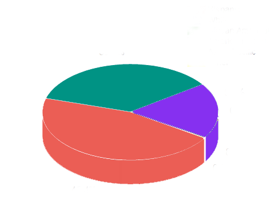
13 Historias de Prioridad Alta
7 Historias de Prioridad Media.
5 Historias de Prioridad Baja.
Debido a que el proyecto tiene una carga de esfuerzo de 146 puntos de historia y que el equipo de desarrollo tiene una velocidad de 20 puntos de historia por iteración (cada una de duración 2 semanas), se estiman que se podrá realizar el proyecto en cuatro sprints, realizándose una entrega parcial al final de cada dos sprints.En los dos primeros sprints se desarrollarían las siguientes historias:
Sprint 1
H.1.Como voluntario quiero registrarme en el sistema para poder hacer uso de sus funcionalidades en el futuro. Prioridad: 8, Esfuerzo: 5
H.2. Como voluntario quiero iniciar sesión en el sistema para poder acceder a los distintos servicios proporcionados por el mismo. Prioridad: 8, Esfuerzo: 1
H.3.Como voluntario quiero cerrar sesión en el sistema para que otros usuarios de mi dispositivo no puedan acceder a mis datos personales. Prioridad: 8, Esfuerzo: 0.5
H.5. Como voluntario quiero apuntarme a una petición que ha creado un usuario para prestarle ayuda. Prioridad: 8, Esfuerzo: 8
H.9. Como solicitante quiero registrarme en el sistema para poder hacer uso de sus funcionalidades en el futuro. Prioridad: 8, Esfuerzo: 1
H.10. Como solicitante quiero iniciar sesión en el sistema para poder acceder a los distintos servicios proporcionados por el mismo. Prioridad: 8, Esfuerzo: 1
H.11. Como solicitante quiero cerrar sesión en el sistema para que otros usuarios de mi dispositivo no puedan acceder a mis datos. Prioridad: 8, Esfuerzo: 0.5
H.21. Como administrador quiero registrarme en el sistema para hacer uso de los servicios proporcionados por el mismo.Prioridad: 8, Esfuerzo: 1
H.23. Como administrador quiero iniciar sesión en el sistema para poder acceder a las distintas funciones del administrador. Prioridad: 8, Esfuerzo: 1
H.24. Como administrador quiero registrar un usuario en el sistema para que pueda acceder a los servicios sin necesidad de crearse una cuenta por sí mismo. Prioridad: 8, Esfuerzo: 1
Sprint 2
H.13. Como solicitante quiero crear una petición en el sistema para que algún voluntario pueda apuntarse y acompañarme.Prioridad: 8, Esfuerzo: 5
H.16. Como solicitante quiero elegir a un compañero de los que se hayan ofrecido a ayudarme en alguna tarea con la finalidad de seleccionar a la persona que mejor se adapte a mis gustos y necesidades.Prioridad: 8, Esfuerzo: 5
H.25. Como administrador quiero incluir las peticiones de un usuario específico para que cualquier voluntario pueda atenderlo.Prioridad: 8, Esfuerzo: 3
H.7. Como voluntario quiero crear una actividad en grupo para que quien así lo desee pueda apuntarse.Prioridad: 6, Esfuerzo: 5
H.14.Como solicitante quiero crear una actividad en grupo para que quien así lo desee pueda apuntarse y participar.Prioridad: 6, Esfuerzo: 1
Poniéndonos en marcha: Sprints 1 y 2
Como dijimos previamente, el objetivo en este proyecto es hacer un boceto de la aplicación a través de herramientas como JustInMind (que no programarlas), pero también que se pudiera dar un esbozo de como sería la experiencia de usuario. Las estadísticas del primer Sprint son:
9+1 Historias de Usuario + 1 SPIKE
20 puntos de esfuerzo
27 tareas a realizar
20 P.H. de velocidad estimada
1 Historia pospuesta a favor de la nueva historia
En concreto, la nueva historia encontrada fue:
H.26 Creación del menú principal de la aplicación
Y el SPIKE, que fue de carácter técnico funcional:
SPIKE TF-1: Pantalla de carga de la aplicación.
El proceso durante el desarrollo fue el siguiente:
1. Dividir la historia de usuario en tareas.
2. Bocetar las pantallas que se definen en las tareas
3. Prototipar los bocetos en JustInMind y darle cierta funcionalidad, transiciones...
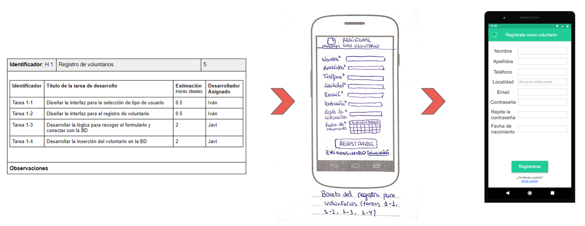
El resultado en la aplicación resulta ser el siguiente:
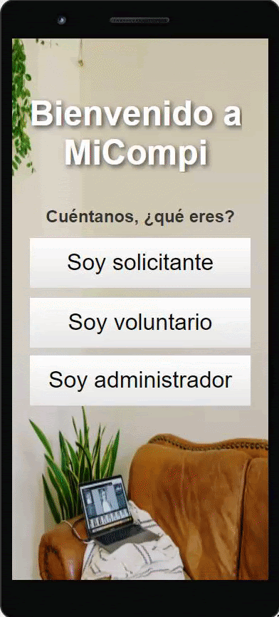
En el segundo sprint el proceso ha sido similar, y las estadísticas han sido las siguientes
5 Historias de Usuario
19 puntos de esfuerzo
15 tareas a realizar
20 P.H. de velocidad estimada
El producto en la segunda iteración queda tal que así:
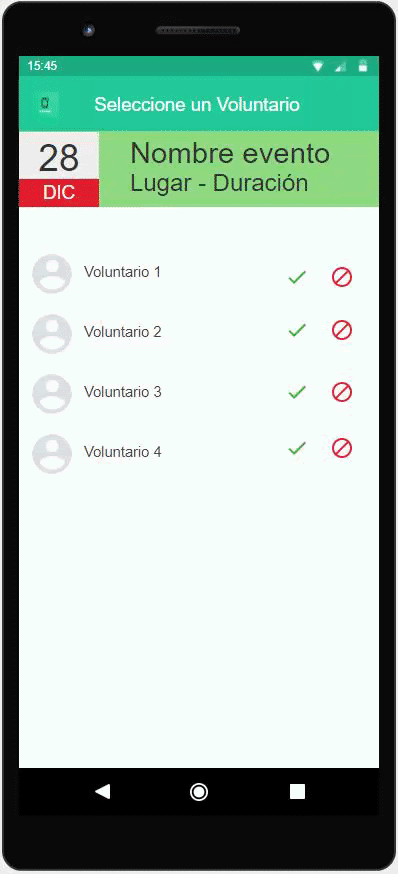
Y además hemos hecho un Burndown Chart que refleja el esfuerzo:
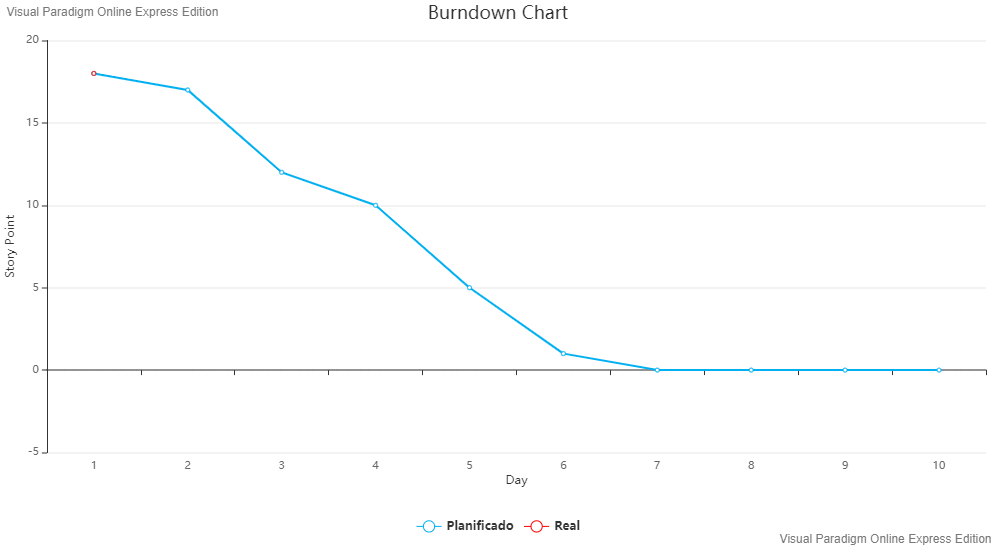
Ventajas e inconvenientes de emplear Metodologías Ágiles en el proyecto
Para permitir una buena visualización podemos enumerarlos en una tabla:
Ventajas
- El trabajo era muy fluido, dándonos tiempo a todo por la planificación
- Nos han ayudado a conocer nuestra capacidad mejor para organizarnos bien en el desarrollo
- Nos ha ayudado a conocernos más entre compañeros de equipo para futuros posibles proyectos
- Los tableros como Trello ayudaban mucho a poder localizar las tareas y notificar cambios en este.
Inconvenientes
La mayoría de los inconvenientes han provenido básicamente de la inexperiencia del equipo, pero que se iban disipando conforme se iban haciendo. Aquí los principales:
- La asignación de roles en el grupo fue una tarea que nos resultó algo ambigua puesto que no sabíamos muy bien si el rol que elegíamos era el que mejor se adapta a nosotros o la tarea que teníamos que hacer.
-Al ser una forma de trabajo distinta, nos costó cambiar la mentalidad de hacer un poco de todo y centrarnos en nuestra función según el rol que teníamos
- Aunque conseguimos muchas ideas en el brainstorming, algunas se escapaban del ámbito de esta asignatura o no se ajustaban lo suficiente
- Hubo que echar más tiempo para encontrar los usuarios idóneos para nuestro sistema así como un conjunto de escenarios que sirvieran de ilustración para la utilidad del sistema.
- La velocidad del equipo también fue un punto de duda ya que no teníamos experiencia previa como equipo
- En el desarrollo de los sprints tuvimos que observar nuestra velocidad y realizar cambios en ella a lo largo de los sprint
- Las reuniones diarias fueron complicadas de organizar debido al estado de pandemia y a ser 5 miembros de distintos lugares.
En conclusión, la buena comunicación entre los compañeros del equipo y el hecho de ser 5 personas permiten poder usar las Metodologías Ágiles, aumentando la velocidad del trabajo y la fluidez del equipo a la hora de realizar proyectos.